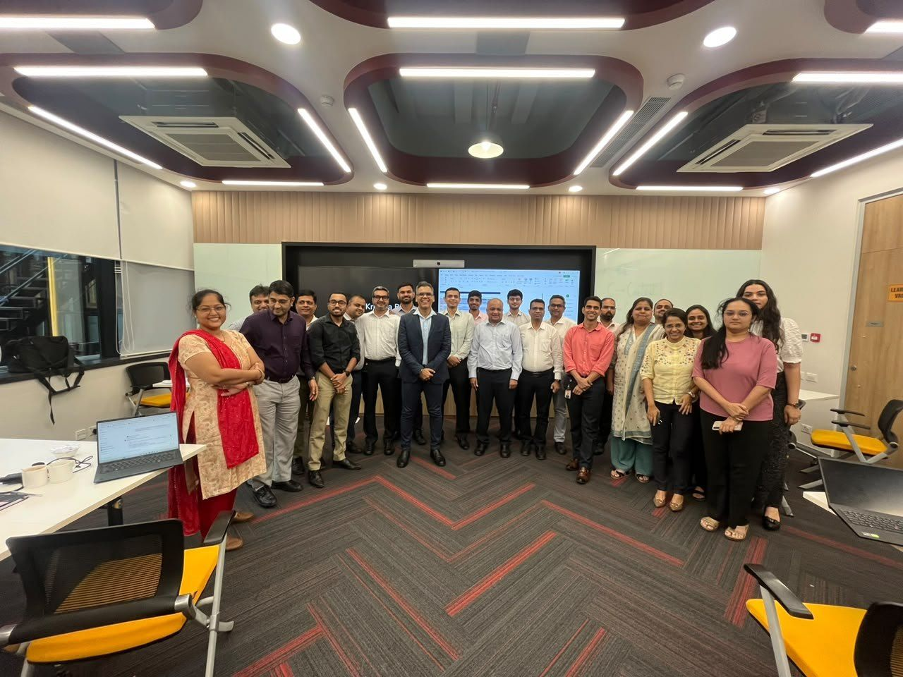
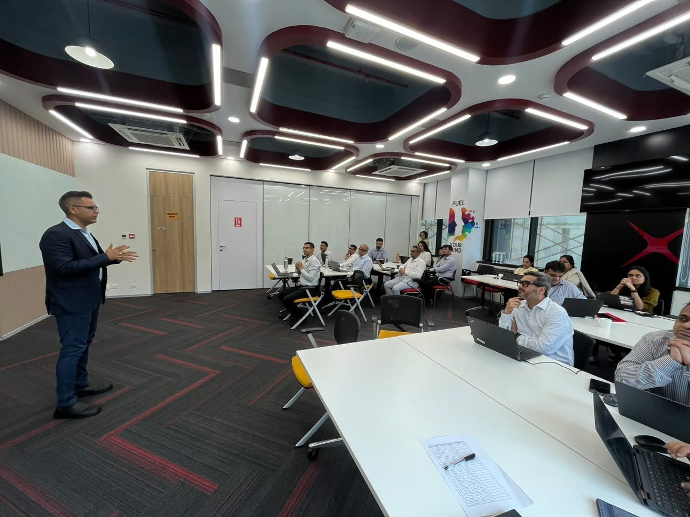
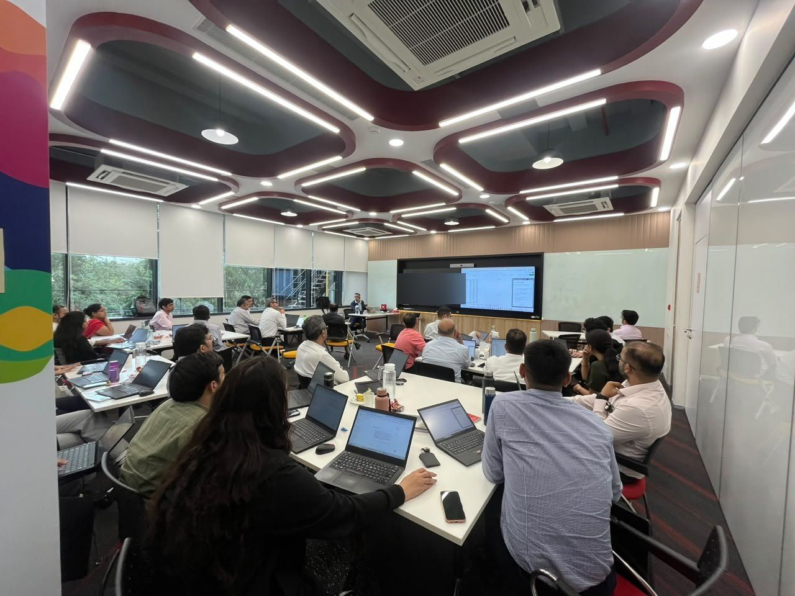
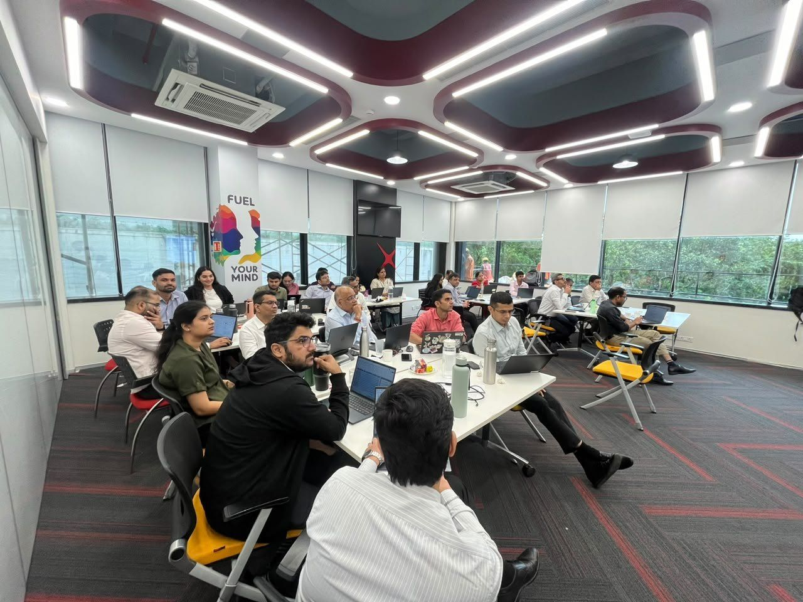
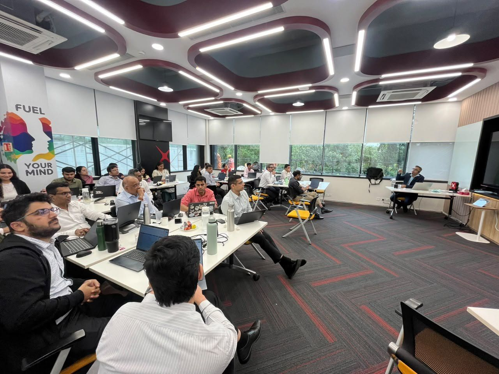

Department-wise Microsoft 365 Copilot enablement for a leading bank
Four one-day, hands-on programs. One department per batch, so every exercise was built on that team's own work, on both Basic and Premium Copilot licences.
Client name withheld. I don't name banking clients without their permission.
Licences were in place. Everyday use wasn't.
- The bank was rolling out Microsoft 365 Copilot with a mix of licences: about half the participants on Basic, half on Premium.
- Generic feature demos don't change how people work. A finance analyst, a product manager and a company secretary need very different things from Copilot.
- Basic licence holders needed to see how much they could already do, without feeling left out.
Built around each team's real work
Instead of one standard Copilot course, every batch was designed for a single department.
One department per batch
Only one team in the room each day, so every example stayed relevant to their role.
The bank's own case studies
Exercises were built on scenarios the department was actually working on.
Basic and Premium, side by side
Both groups saw what they can do today, and where the Premium licence adds value.
Hands-on, all day
Everyone worked on their own laptop and left with prompts they could reuse.
What each team worked on
A sample of the use cases covered in each batch.
AI Champions
- Building reusable prompt playbooks for their teams
- Spotting anomalies across operational reports
- Driving Copilot adoption across departments
Finance
- Variance and trend analysis in Excel
- Flagging anomalies in MIS and ledger data
- Drafting commentary for top-management reviews
Product & Mobile App
- Turning customer and app-store feedback into themes
- Drafting user stories and requirement documents
- Writing release notes and feature summaries
Legal & Company Secretarial
- Summarising contracts and policy documents
- Drafting board agendas, minutes and notes
- Building compliance checklists faster
Across every team: leadership-ready presentations for top management, built from their own Excel and Word data.
How Basic and Premium were covered
Every batch had both kinds of licence holders, so both paths were taught in the same session.
More than enough to start
- Drafting emails, notes and summaries from chat
- Analysing content you paste or upload
- Structuring ideas and outlines for presentations
- Prompt habits that work on any licence
Copilot inside the apps
- Working directly in Word, Excel, PowerPoint and Outlook
- Drawing on your own files, mail and meetings
- Building decks from existing documents
- Meeting recaps and follow-ups in Teams
Inside the training room





Ready to use Copilot the next morning
- Department-specific promptsTested on their own scenarios during the session, ready to reuse.
- Clarity on their licenceBasic users knew what they can do today; Premium users knew where to go further.
- Workflows, not featuresFrom analysis and anomaly checks to leadership presentations.

Let's design training around your teams' real work
Faiyaz M Khairaz, Microsoft Certified Trainer with 22+ years in corporate training. Copilot, Claude, Advanced Excel and Power BI programs for banking and financial services teams.